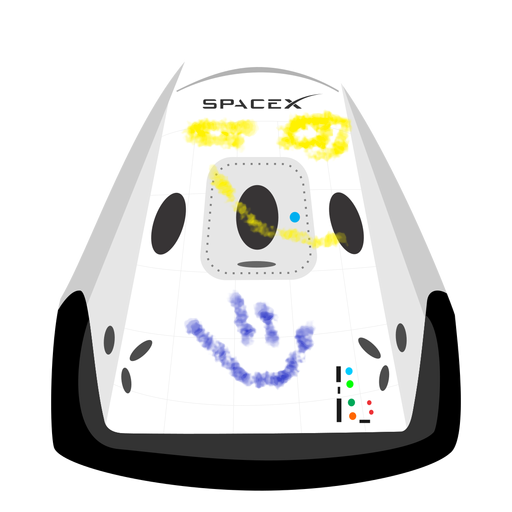

Tu blog de cabecera
Este es el título atractivo e interesante del post.

Es el párrafo de inicio donde vamos a explicar las cosas increíbles que se pueden hacer con ramas
Este es otro párrafo nuevo solamente para probar la fusion de ramas
Suscribete y dale like!